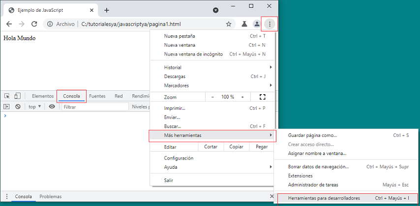

JavaScript, al igual que Flash(tecnología obsoleta), Visual Basic Script (tecnología obsoleta), Applet (tecnología obsoleta), es una de las múltiples maneras que han surgido para extender las capacidades del lenguaje HTML (lenguaje para el diseño de páginas de Internet). Al ser la más sencilla, es por el momento la más extendida.
JavaScript no es un lenguaje de programación propiamente dicho como C, C++ etc. Es un lenguaje script u orientado a documento, como pueden ser los lenguajes de macros que tienen muchos procesadores de texto y planillas de cálculo. Hasta hace poco no se podía desarrollar programas con JavaScript que se ejecutaran fuera de un Navegador, aunque en este momento comienza a expandirse a otras áreas como la programación en el servidor con Node.js o aplicaciones de escritorio con Electron JS.
JavaScript es un lenguaje interpretado que se embebe en una página web HTML. Un lenguaje interpretado significa que a las instrucciones las analiza y procesa el navegador en el momento que deben ser ejecutadas.
Nuestro primer programa será el famoso "Hola Mundo", es decir un programa que muestre en el documento HTML el mensaje "Hola Mundo".
<!DOCTYPE html>
<html>
<head>
<title>Ejemplo de JavaScript</title>
<meta charset="UTF-8">
</head>
<body>
<script>
document.write('Hola Mundo');
</script>
</body>
</html>
El programa en JavaScript debe ir encerrado entre las marcas 'script':
<script> </script>
En versiones anteriores a HTML5 el programa en JavaScript debe ir encerrado entre la marca script e inicializada la propiedad type con la cadena text/javascript:
<script type="text/javascript"> </script>
Para imprimir caracteres sobre la página debemos llamar al comando 'write' del objeto document. La información a imprimirse debe ir entre comillas y encerrada entre paréntesis. Todo lo que indicamos entre comillas aparecerá tal cual dentro de la página HTML.
Es decir, si pedimos al navegador que ejecute esta página mostrará el texto 'Hola Mundo'.
Cada vez que escribimos una instrucción finalizamos con el carácter punto y coma.
ES IMPORTANTISIMO TENER EN CUENTA QUE JavaScript es SENSIBLE A MAYUSCULAS Y MINUSCULAS. NO ES LO MISMO ESCRIBIR:
document.write que DOCUMENT.WRITE (la primera forma es la correcta, la segunda forma provoca un error de sintaxis).
Nos acostumbraremos a prestar atención cada vez que escribamos en minúsculas o mayúsculas para no cometer errores sintácticos. Ya veremos que los nombres de funciones llevan letras en mayúsculas.
Por el momento después de cada instrucción se dispone un punto y coma (luego veremos que en muchos casos se los puede obviar):
document.write('Hola Mundo');
Acotaciones
Para corregir los errores sintácticos cuando codifiquemos nuestros programas será necesario tener abierta la ventana de "Herramientas para desarrolladores". La podemos abrir presionando la tecla 'F12' o desde el menú de opciones del navegador:
Por ejemplo modifiquemos nuestro programa y agreguemos un error sintáctico:
<script>
DOCUMENT.WRITE('Hola Mundo');
</script>

La pestaña de la "Consola" nos informa el tipo de error, el archivo y la línea dentro del archivo donde se ha detectado el error.
Esta herramienta para desarrolladores la consultaremos constantemente para detectar y corregir errores que dispongamos en nuestra aplicación.